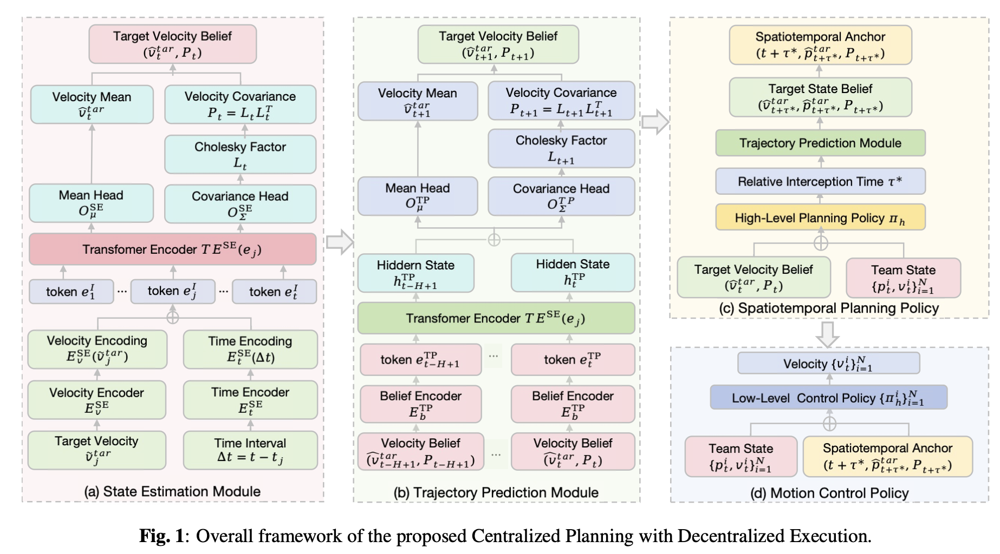

ICASSP 2026
A Centralized Planning With Decentralized Execution Framework for Counter-UAV Operations in Urban Environments
Centralized planning and decentralized execution for multi-agent counter-UAV operations in urban environments.
Read paperCite this work
@inproceedings{cong2026centralized,
author = {Cong, Shan and Jiang, Zhenglan and
Huang, Yongming and Pan, Tianlu and Yu, Chao},
title = {A Centralized Planning With Decentralized
Execution Framework for Counter-UAV
Operations in Urban Environments},
booktitle = {ICASSP 2026 - 2026 IEEE International
Conference on Acoustics, Speech and
Signal Processing (ICASSP)},
year = {2026},
pages = {4066--4070},
doi = {10.1109/ICASSP55912.2026.11461509}
}